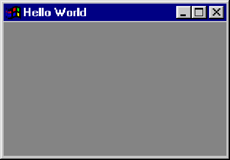

| wxPython, a cross-platform GUI Library |
| wxPython, a cross-platform GUI Library |
from wxPython.wx import wxPySimpleApp, wxFrame
app = wxPySimpleApp()
frame = wxFrame(None, -1, "Hello World")
frame.Show(1)
app.MainLoop()
|  |
| wxPython, a cross-platform GUI Library |